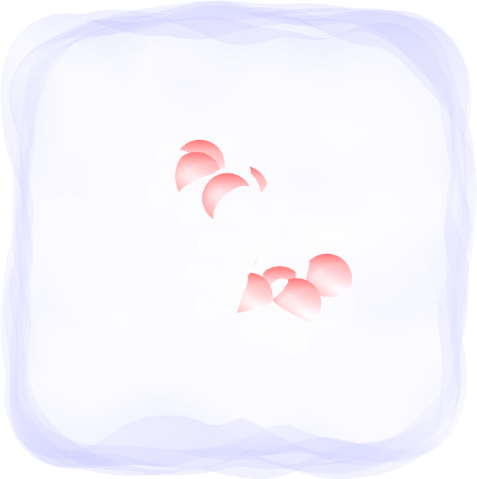
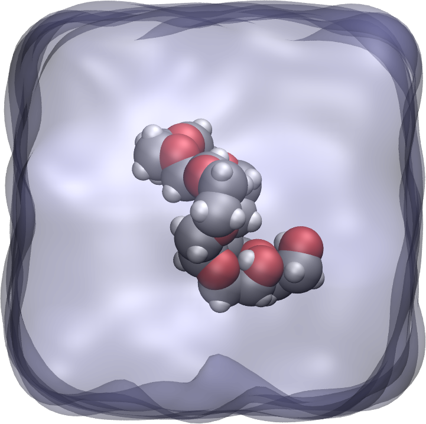
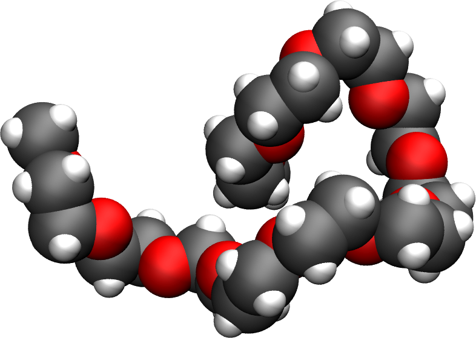
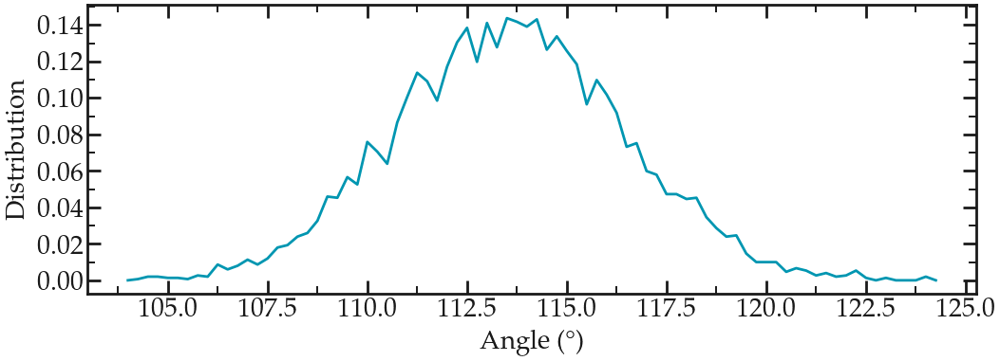

Polymer in water#
Solvating a small molecule in water before stretching it
{kind=link}

{kind=link}

The goal of this tutorial is to use GROMACS and create a small hydrophilic polymer (PEG - PolyEthylene Glycol) in a reservoir of water. An all-atom description is used, therefore all species considered here are made of charged atoms connected by bonds constraints.
Once the system is created, a constant stretching force will be applied to both ends of the polymer, and its length will be measured with time.
This tutorial was inspired by a very nice publication by Liese and coworkers, in which they compare MD simulations with force spectroscopy experiments.
Looking for help with your project?
See the Contact page.
PEG molecule in vacuum#
Download the peg.gro file for the PEG molecule by clicking here.
Opening peg.gro using VMD, one can see that it consists of a rather long polymer chain main of carbon atoms (in gray), oxygen atoms (in red), and hydrogen atoms (in white):
{kind=link}

{kind=link}

This PEG molecule contains 24 carbon atoms, 12 oxygen atoms, and 50 hydrogen atoms.#
Create a folder named peg-in-vacuum/, and copy peg.gro in it. Next to peg.gro create an empty file named topol.top, and copy the following lines in it:
[ defaults ]
; nbfunc comb-rule gen-pairs fudgeLJ fudgeQQ
1 1 no 1.0 1.0
; Include forcefield parameters
#include "ff/charmm35r.itp"
#include "ff/peg.itp"
[ system ]
; Name
PEG
[ molecules ]
; Compound #mols
PEG 1
Next to conf.gro and topol.top, create a folder named ff/, and copy the following files into it: charmm35r.itp and peg.itp
These 2 files contain the parameters for the PEG molecules, as well as extra parameters for the water molecules that will be added later.
Create an inputs/ folder next to ff/, and create a new empty file called nvt.mdp. Copy the following lines into it:
integrator = md
dt = 0.002
nsteps = 500000
nstenergy = 1000
nstlog = 1000
nstxout = 1000
constraints = hbonds
coulombtype = pme
rcoulomb = 1.0
rlist = 1.0
vdwtype = Cut-off
rvdw = 1.0
tcoupl = v-rescale
tau_t = 0.1
ref_t = 300
tc_grps = PEG
gen_vel = yes
gen-temp = 300
gen-seed = 65823
comm-mode = angular
Run the simulation using GROMACS by typing in a terminal:
gmx grompp -f inputs/nvt.mdp -c peg.gro -p topol.top -o nvt -maxwarn 1
gmx mdrun -v -deffnm nvt
After the simulation is over, open the trajectory file with VMD by typing:
vmd peg.gro nvt.trr
You should see the PEG molecule moving.
Angle distribution#
Let us use the power of GROMACS to extract the angular distribution between triplets of atoms during the run. First, let us create an index file from the peg.gro file:
gmx mk_angndx -s nvt.tpr -n index.ndx -hyd no
The first group created contains all the carbon and oxygen atoms (a total of 36 atoms), as can be seen from the index.ndx file:
[ Theta=109.7_795.49 ]
2 5 7 10 12 14 17 19 21 24 26 28
31 33 35 38 40 42 45 47 49 52 54 56
59 61 63 66 68 70 73 75 77 80 82 84
Here each number corresponds to the atom index, as can be seen from the peg.gro file. For instance, atom of id 2 is a carbon atom, and five in an oxygen:
PEG in water
86
1PEG H 1 2.032 1.593 1.545 0.6568 2.5734 1.2192
1PEG C 2 1.929 1.614 1.508 0.1558 -0.2184 0.8547
1PEG H1 3 1.902 1.721 1.523 -3.6848 -0.3932 -3.0658
1PEG H2 4 1.921 1.588 1.400 -1.5891 1.4960 0.5057
1PEG O 5 1.831 1.544 1.576 0.0564 -0.5300 -0.6094
1PEG H3 6 1.676 1.665 1.494 -2.6585 -0.5997 0.3128
1PEG C1 7 1.699 1.559 1.519 0.6996 0.0066 0.2900
1PEG H4 8 1.699 1.500 1.425 4.2893 1.6837 -0.9462
Using the index file, one can extract the angle distribution between all the species in the group Theta=109.7_795.49, by typing:
gmx angle -n index.ndx -f nvt.trr -od angdist.xvg -binwidth 0.25
Select the first group by typing 0. A file named angdist.xvg was created, it looks like it:


Angle distribution for the Carbon and oxygen atoms of the PEG molecule in vacuum.#
Contact me
Contact me if you have any question or suggestion about these tutorials.